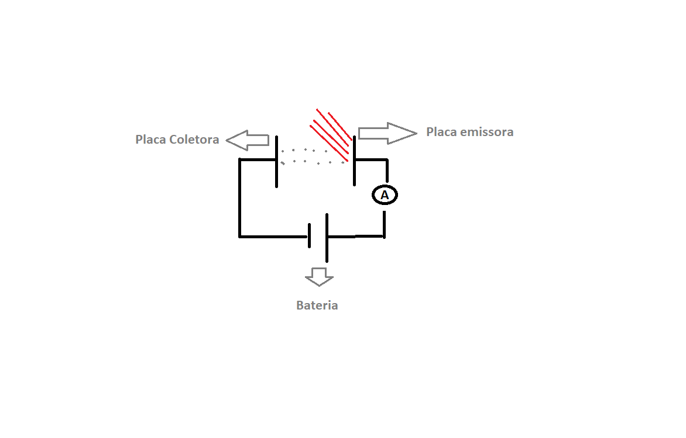

Natureza dual da luz: Onda e particula
A Física Quântica surgiu quando não se conseguiu explicar o comportamento da matéria ao nível do atómico e a sua interação com a luz, no quadro das leis da Física Clássica.
Radiação térmica
A radiação emitida por um corpo devido à sau temperatura é chamada radiação térmica. Todo o corpo emite esse tipo de radiação para o meio que o cerca e o absorve. A matéria em um estado condesado emite um espetro continuo de radiação. Os detalhes do espetro são praticamente independentes do tipo de material do qual o corpo é composto, mas dependem da temperatura.Outro conceito importante é o de corpo negro: corpos cujas superfíceis absorvem toda a radiação térmica incidente sobre eles e emite toda a radiação possível. Para estudar a radiação térmica habitualmente estuda-se o conceito de irradiância que é é a energia total emitida por unidade de tempo por unidade de área por um corpo negro à temperatura T. Desta forma podemos introduzir a a lei de Stefan: $$\frac{P}{A}= \sigma T^{4}$$ onde $$\sigma=5,67 \times 10^{-8} W/m^{2}/K^{4}$$
Define-se ainda \(\rho_{v}\) , densidade espetral que é a energia por unidade de volume e frequência dentro do corpo negro. Max Plack em 1900 por ajuste da expressão da densiadade de energia à curva experimental obteve um acordo excelente: $$\rho_{v}=\frac{8\pi v^{2}}{c^{3}} \frac{hv}{e^{hv/kT}-1}$$ onde \(c\) é a velocidade da luz, \(v\) é a frequência, \(h=6.6 \times 10^{-34} Js \), \(k=1.38 \times 10^{-22} J/k \). Nota: para fazer a transição para o comprimento de onda faz-se a seguinte substituição \(v=c/\lambda \) e \(dv=-(c/\lambda^{2}) d_{\lambda}\). $$\rho_{\lambda}=-\rho_{v}\frac{dv}{d_{\lambda}}$$ $$\rho_{v}=\frac{8\pi hc}{\lambda^{5}} \frac{1}{e^{hc/ \lambda kT}-1}$$
Efeito Fotoelétrico
A emissão de eletrões de uma superficie, devido à incidência de luz sobre essa superfície é denominado por feito fotoelétrico. Precedeu-se a várias experiências para observar este fenómeno. Um exempo de uma montagem experimental exemplifica-se de seguida:
A radiação monocromática incide na placa emissora e são emitidos fotoeletrões que são dirigidos paraa placa coletora e são detetados pelo amperímetro. À medida que se aumenta o potencial elétrico, V, na placa coletora, os eletrões libertados chegam em menor quantidade à placa. A corrente elétrica aumenta linearmente com a intensidade da radiação. Não obstante, a velocidade máxima dos eletões não aumenta com ao aumenta da intensidade da radiação. A enercia cinética máxima dos eletões libertados aumenta qualitivamente com a frequência da luz incidente. Abaixo de uma determinada frequência de corte, nenhum eletrão é emitido. De destacar que o potencial de paragem não depende da intensidade da luz incidente.
Em 1905, Einstein propôs uma teoria que explicava o efeito fotoelétrico, diferente da teoria clássica ondulatória da luz. Einstein argumentou que as experiências óticas de interferência com difração da radiação eletromagnática haviam sido realizadas e, situações que envolviam um elevado número de fotões. Desta forma, Einstein concentrou a sua atenção na forma corpuscular com que a luz é emitida e absorvida invés da sua forma ondulatória.
Considerou a luz como um feixe de pacotes discretos de energia, que é dada pela relação de Plack: $$E=nhv$$ onde \(h\) é a contante de Planck, \(n\) o número de fotões e \(v\) a frequência da radiação. Considerou ainda que o efeito fotoelétrico resulta da colisão com conservação de energia de um quantum de luz com um eletrão no interior do metal, em que este quantum é aniquilidado e a sua energia é toda transferida para o eletrão.
Quando um eletrão é emitido da superficie do metal, a energia cinética é dada por: $$ K= hv- \phi$$ onde \(hv\) é a energia do fotão e \(\phi \) é a função trabalho.
A função trabalho é a energia minima para remover o eletrão do metal. Os eletrões dentro metal sofrem forças atrativas sendo por isso as suas energias menores que a do eletrão fora do metal. Por convenção a energia do eletrão fora do metal é zero. Por isso a a energia total do eletrão total no metal está num intervalo de valores cujo o valor máximo é \(-\phi\) e um valor mínimo. Desta forma se energia do fotão for menor que a função trabalho não existe emissão do eletrão.
A frequência de corte é a frequência mínima para que se produza o efeito elétrico, ou seja para quando para todos os eletrões tiverem energia cinética nula. $$K=0 \Leftrightarrow hv_{c}-\phi=0 \Leftrightarrow v_{c}=\frac{\phi}{h}$$
O potencial de paragem medido num circuito com coletor é dado por: $$eV_{p}=hv-\phi'$$
Efeito de Compton
A natureza particular da radiação foi confirmada por Compton. Ele fez incidir raios X com comprimento de onda \(\lambda\), numa placa de grafite. Embora o raios X incidentes possuam apenas um comprimento de onda, os raios espalhados têm máximos de intensidade em dois comprimentos de onda. Usando uma camâra de nevoiro foi possível observar a existência de um eletrão de recuo de energia e momento previstos pela conservação do momento e da energia.

$$\vec{p_{f}}+\vec{0}=\vec{p_{f'}}+\vec{p_{e}}$$ $$E_{f}+mc{2}^=E_{f'}+E_{e}$$ onde se têm: \( E_{f}=p_{f}c\) e \(E_{e}=mc^{4}+p_{e}^{4}c^{2}\). Com \(m\) é a massa do eletrão.
O resto da dedução deixa-se para o leitor. :D Por fim chega-se è expressão: $$\lambda'-lambda=\frac{h}{mc}(1-cos\phi)$$